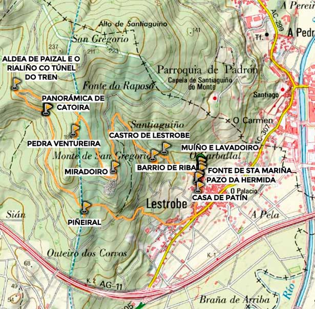
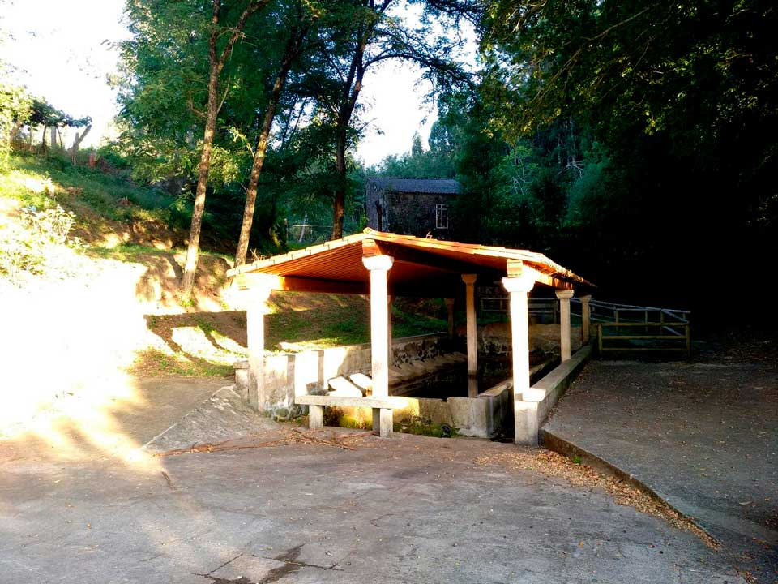
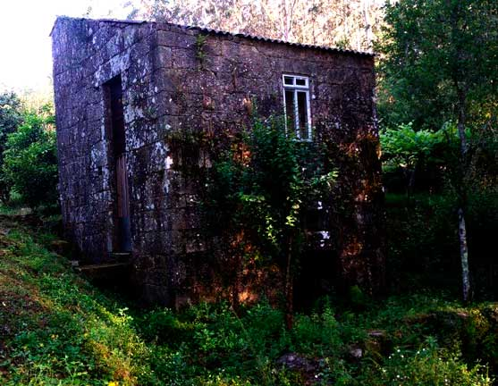
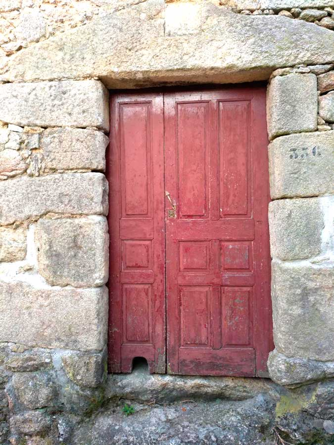
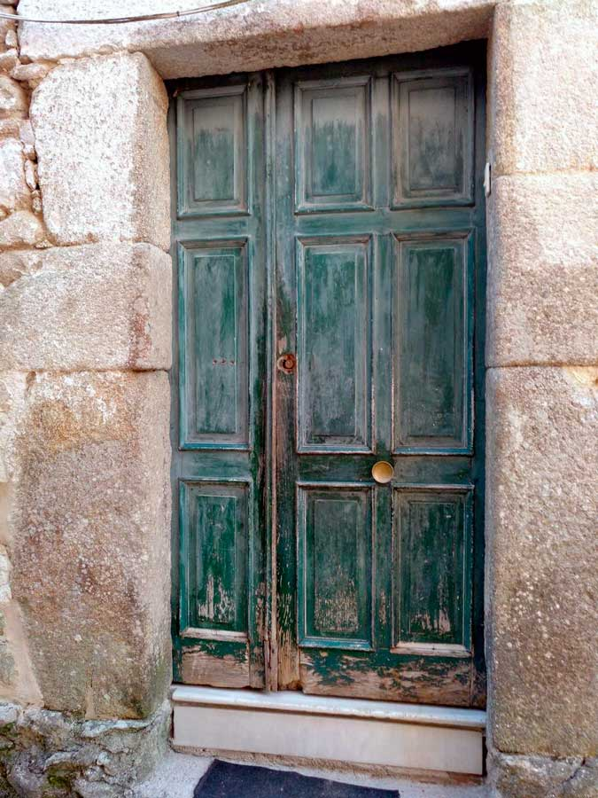
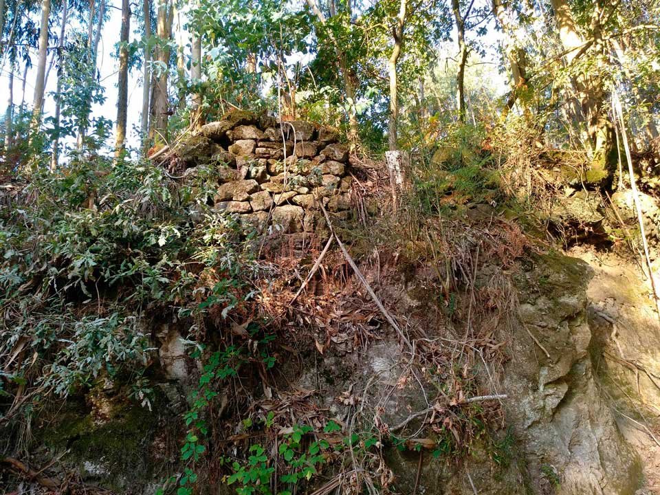
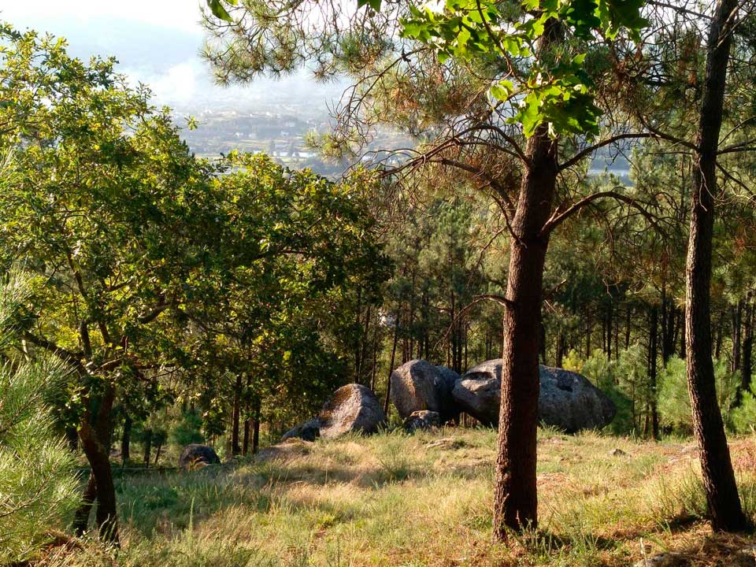
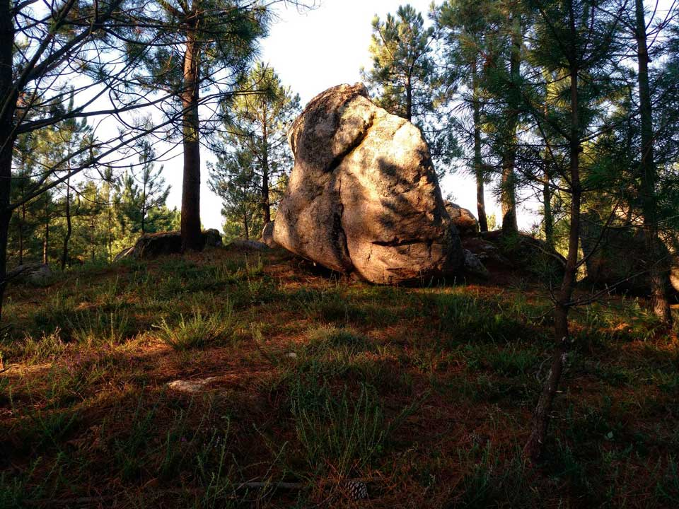

Ruta que percorre algúns dos espazos máis singulares da aldea de Lestrobe (Dodro), dando a coñecer o seu patrimonio.
| Inicio | Lavadoiro de Lestrobe |
| Fin | Lavadoiro de Lestrobe |
| Distancia | 5,9 Km |
| Tipo | Circular |
| Duración | 1 h 30 min |
| Dificultade | Media-baixa |

Lavadoiro de Lestrobe S.XX
“Iniciamos o percorrido no barrio de Riba de Lestrobe,xunto ao lavadoiro.A division da aldea en Barrio de Riba e Barrio de Baixo ven marcada pola estrada que atravesa o nucleo de poboacion e que recive o nome do escritor e xornalista local Fortunato Cruces.A orixe da palabra lavadoiro esta no latin LAVARE,"lavar".Os lavadoiros eran pedras planas,lancheiras dispostas nas marxes dos regatos,nas que se lavaba a roupa” “O de lestrobe,con dez pedras a cada lado,e o mais grande de todos os de dodro.”

Muíño do Chuco ou de Fidel S.XVIII
“ É de propiedade privada e data do S.XVIII. Na obra “A Toponimia de Dodro e de Laíño. Os nomes na auga” Manuel Lorenzo Baleirón relata O Muíño de Fidel e o do Regueiro, agora destruído, están do lado de riba da aldea de Lestrobe. Gonzalo Gayoso Carreira, na monumental Historia del papel en España, cóntanos que no ano 1759 estaba en activo no Couto de Lestrobe un muíño de papel ordinario e de estraza, que “polas curtas facultades do seu dono só fabricaba unha pequena cantidade de resmas ó ano”. Puido ter sido o de Fidel pois o outro era de menores dimensións e os outros dous que houbo á beira da estrada eran xa eléctricos. Durante os séculos XVIII e XIX sería o único existente en toda a Terra de Iria e da Arousa ata a fábrica do Faramello. ” “Xusto detrás do lavadoiro atopamos o único muíño que conserva Lestrobe, dos catro que chegou a ter.” 
Zona das arquetas e fonte de Santa María
“O percorrido está cheo de casetas que gardan os pozos. Antigamente a veciñánza facíase cargo delas, na actualidade son empresas as responsables da cloración das augas e mantemento dos depósitos, pero aínda quedan pozos de auga pura, propiedade das/os veciñas/os. Seguindo o percorrido chegamos á Fonte de Santa María, unha amena paraxe que tiña lavadoiros que servían de pasais para cruzar polo camiño de Santiago.” “Coa subida do chamado Barrio de Riba atopámonos a zona das arquetas. Estas son pozos de auga que abastecen a toda a aldea.”
 Castro de Lestrobe (Idade de Ferro)
“A súa “croa” mide uns 70 m de diámetro pero engadindo a lonxitude dos foxos o recinto acada uns 120 m de extensión. No norte, adivíñanse restos dos foxos e contrafoxos. Está atravesado por unha pista denominada o “Camiño do Castro”. Ao oeste atópase Castelo do Monte Vilar, resultado dunha refortificación medieval do castro, de 200 m de altitude e con vistas do val do Ulla e do monte Muralla (Rianxo). Nos seus arredores encontráronse fragmentos de cerámica e un muíño que datan do S.I ou S.II a.C. Este tamén é un lugar de lendas, a poboación de Lestrobe aínda fala da Laxe do Castro, unha porta custodiada por unha “señorita” que, ás veces, vixiaba a entrada; o medo das/os veciñas/os evitaba que o visitasen a certas horas” “A seguinte parada é o Castro de Lestrobe. Este localízase no noroeste da aldea, a uns 88 m de altitude, na ladeira do monte do Castro ou da Pena, orientado cara o val do río Ulla.”
Miradoiro de Lestrobe
“No inverno ten zonas de auga que poden ser perigosas, en cambio, no verán, o transcurso é agradable grazas á sombra dos pinos e carballos. Este espazo proporciónanos unhas vistas espléndidas, pois permite observar o horizonte seguindo a liña dende o monte de Meda até a confluencia dos ríos Sar e Ulla. Dotado cunha fonte e zona de merendeiro convértese nun lugar ideal para o descanso e avituallamento.” “O camiño continúa o ascenso ata un miradoiro. Este tramo é de dificultade moderada (desniveis de até un 30%).”
Pedra Ventureira
“Segundo as lendas recibíu esta denominación pola dificultade que supoñía alcanzar o seu cumio sen ningún tipo de axuda técnica, desta forma convertíuse nun reto para a mocidade dos arredores que intentaban coroala. Existe constancia que na antigüedade estaba rodeada de flora, destacando as acacias, e de fauna: esquíos, xilgaros... Desde aquí iniciamos o descenso cara a aldea por unha zona de nova plantación de carballos e castiñeiros, onde o camiño é de herba nalgúns tramos.” “Continuamos a nosa ruta até chegar ao cruce do “cortalumes do gas”, onde localizamos o que as persoas maiores do lugar chaman Pedra Ventureira, unha mole de granito con forma piramidal, duns 4 m de alto e 3 m de ancho na súa base. ”
